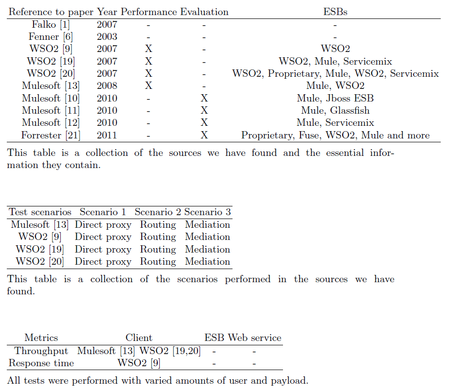
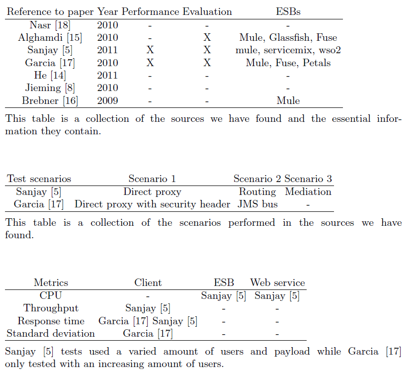
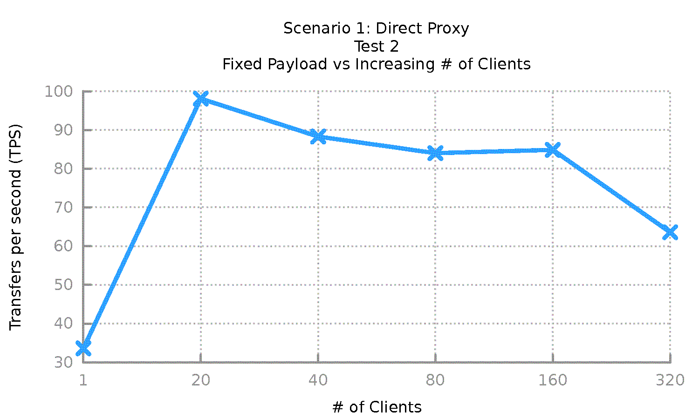
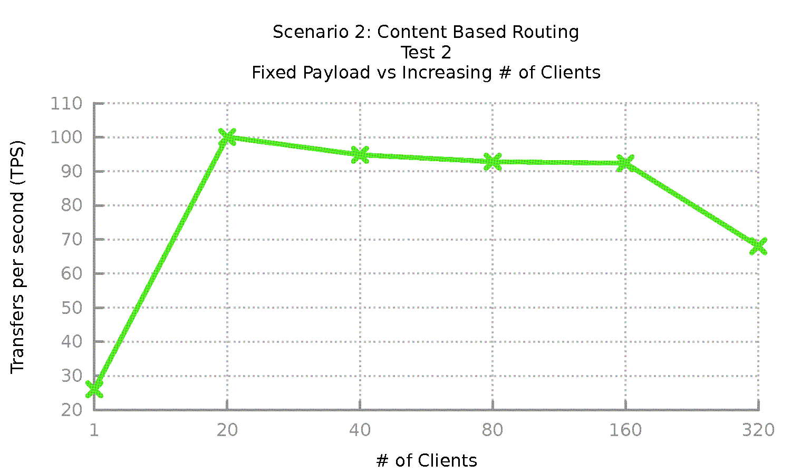
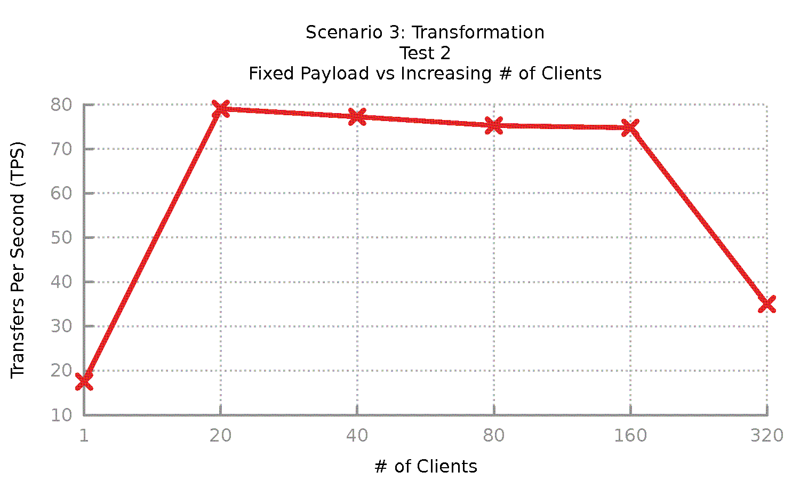
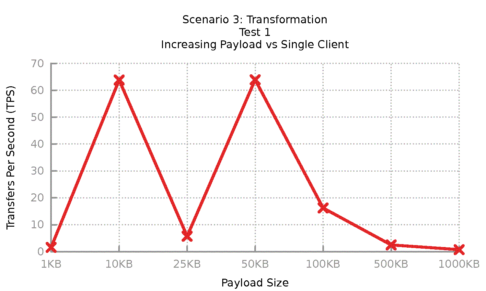
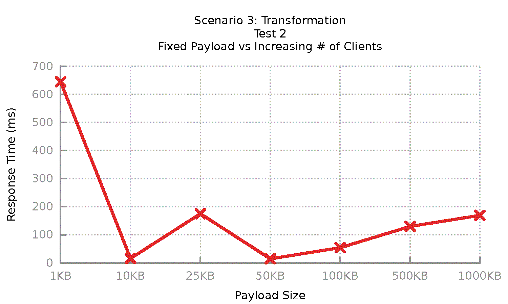
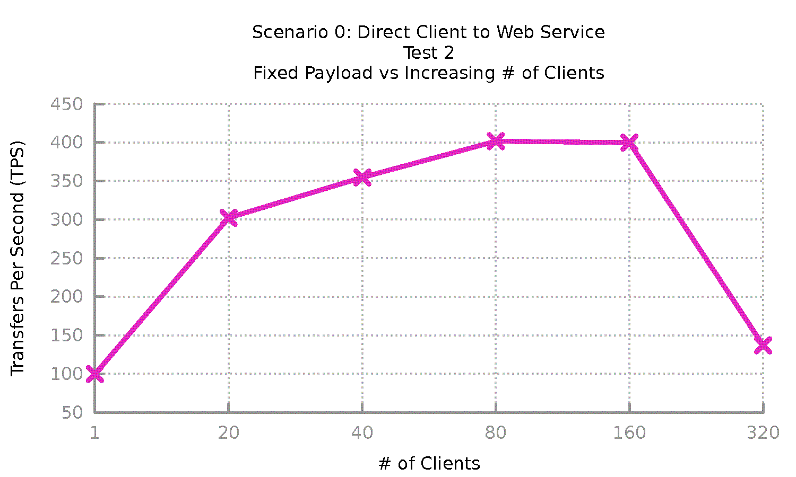

Your browser doesn't support the features required by impress.js, so you are presented with a simplified version of this presentation.
For the best experience please use the latest Chrome, Safari or Firefox browser.
"Examining current academic and industry Enterprise service bus knowledge and what an up-to-date testing framework could look like"
Joakim Olsson and Johan Liljegren
Independent islands of computing
- Too expensive to replace
- Age
- Vastly different technologies and protocols
Almost all western companies have legacy systems
Point to Point
- Spaghetti integration
- No scaling whatsoever
- Extremely complex very fast
Hub-n-spoke
- Less spaghetti integration
- Somewhat scalable
- Single point of failure
Enterprise Service Bus
- Like hub-n-spoke
- Scalable
- No single point of failure
Research questions
-
RQ1: What is the current knowledge of ESBs in academia?
-
RQ2: What is the current knowledge of ESBs in the industry?
-
RQ3: What are the components of a transparent and unbiased ESB solutions comparison framework?
Literature review
Industry

Academia

Test results and test framework






RQ1-2
Industry
Academia
- Non-existent
- Questionable results
RQ3
- Framework works
- Need ESB specific "experts"
- Faster network
Future work
Getting ESB makers to make the ESB project solution used in testing
Increase complexity of the framework